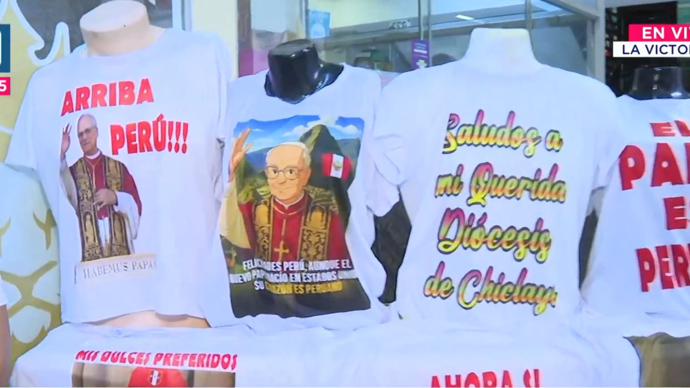

Sigue en esta nota el minuto a minuto de todos los detalles de sus labores en territorio peruano. Papa León XIV Papa En Perú Oración Por La Paz Zaña???? Papa León XIV Papa En Perú Zaña lambayeque.



Sigue en esta nota el minuto a minuto de todos los detalles de sus labores en territorio peruano. Papa León XIV Papa En Perú Oración Por La Paz Zaña???? Papa León XIV Papa En Perú Zaña lambayeque.
Mostró fotos (en el interior de un colegio) que probarían un vínculo entre su contendor y Héctor Acuña, hermano de César Acuña, exgobernador de La Libertad.
El papa León catorce celebra misa en pampa de Santa Cruz de Succhabamba en Cajamarca. El papa León catorce llegó ayer a Cajamarca para cumplir una promesa que mantenía con la comunidad de Santa Cruz de Succhabamba. “Yo sé que si Jesús decide venir a Santa Cruz, va a encontrar la fe”, exclamó.
Polos, peluches y hasta funkos del papa León catorce se venden en Cusco El comercio de recuerdos se expande en las ciudades que visita el papa León catorce, donde se ofrecen artículos desde un sol hasta los 100 soles.
Esta célula es señalada por su presunta participación en el asesinato de Carlos Manzo, exalcalde de Uruapan, Michoacán. Ambos sujetos ya fueron detenidos y son señalados por las autoridades como presuntos autores intelectuales del homicidio de Carlos Alberto Manzo Rodríguez el 1 de noviembre de 2025.
(Miriam Estrella, Infobae México) Las palabras de Shirley Manson para todos sus seguidores mexicanos El punto de mayor emotividad llegó cuando la carismática vocalista detuvo momentáneamente los instrumentos para conectar de manera íntima con la multitud.
Alianza Lima no pudo ante Universidad San Martín por la quinta jornada de la Liga Peruana de Vóley. Jamaica por los cuartos de final de la Liga de Naciones Concacaf. Jamaica por la Liga de Naciones Concacaf, desde el Estadio Nacional de Kingston.
El Servicio Sismológico Nacional ( SSN ) mantiene este domingo 15 de noviembre monitoreo en tiempo real de la actividad sísmica en México.
Como dicen la mayoría de las encuestas, Alberto Núñez Feijóo llegaría a La Moncloa con el apoyo de Vox. O Pedro Sánchez puede obtener un resultado inesperado y volver a armar una mayoría con el resto de partidos del arco parlamentario.
Cada edición dura menos de dos minutos. En la web tienes el resumen de cada historia y el enlace directo al medio original para leerla completa.
Conoce Olfatecho →